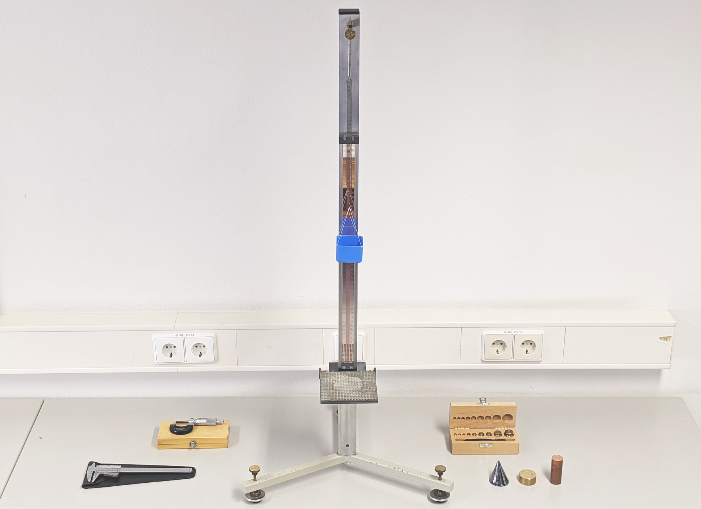
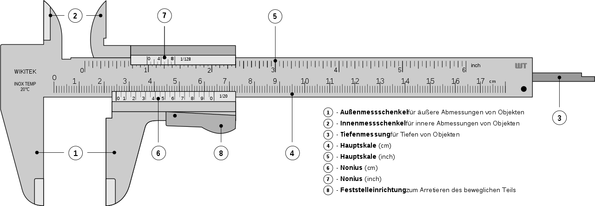
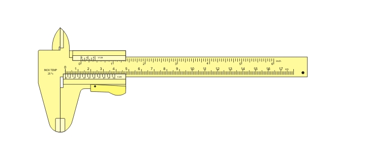
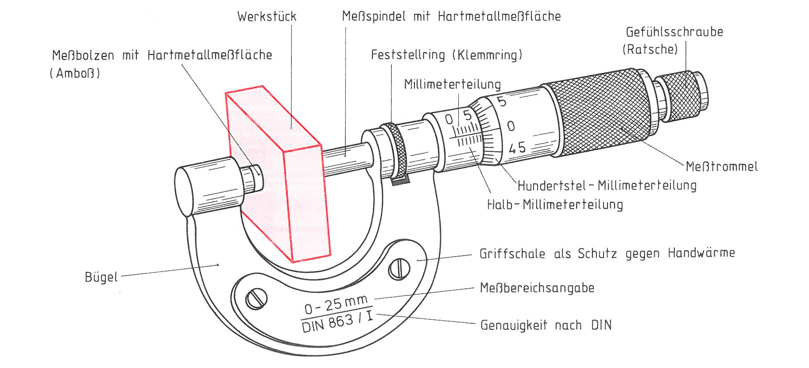
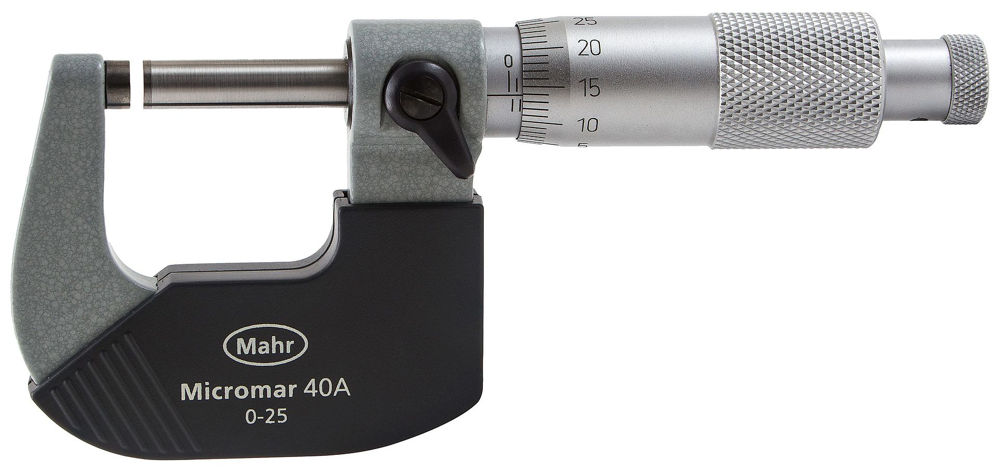
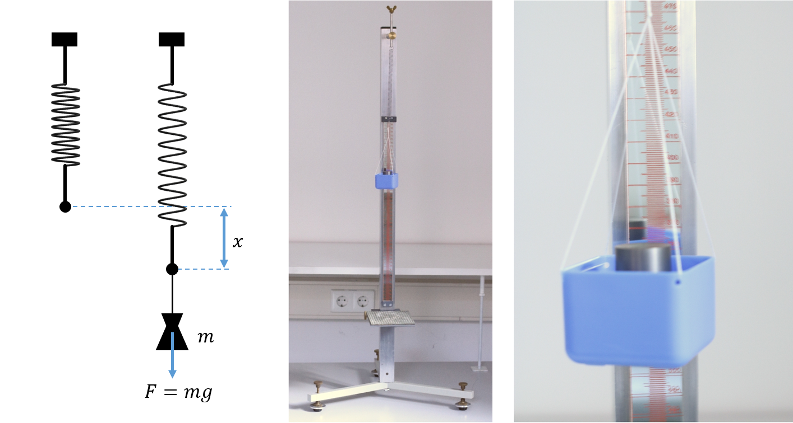
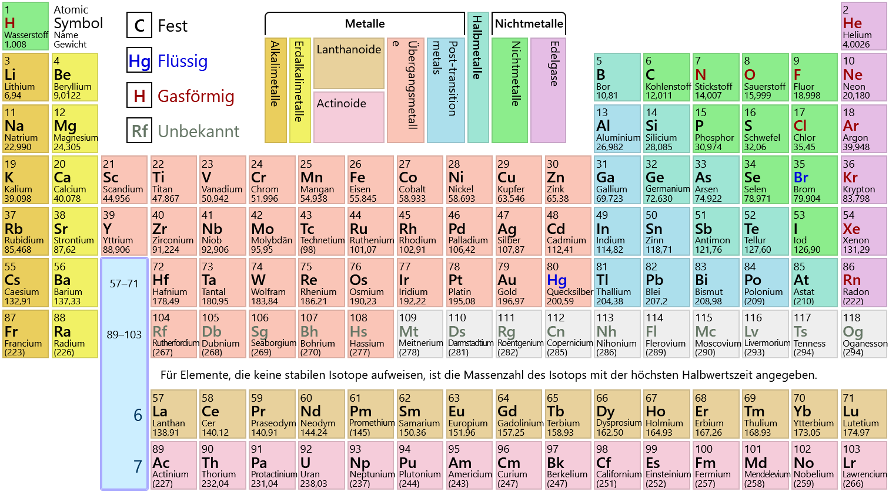
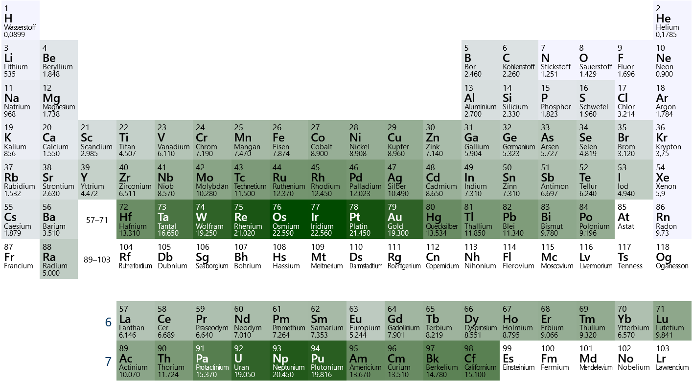

🧪 Versuch 4#
Bestimmung der Dichte verschiedener Metalle#
Wir bestimmen die Dichte als Verhältnis von Masse zu Volumen für verschiedene Metalle.
Die Masse wird mit einer selbst kalibrierten Federwaage gemessen,
das Volumen für regulär geformte Körper aus Längenmessungen berechnet.
🎬 Motivationsvideo#
(Die in den Videos behandelten Experimente entsprechen nicht unbedingt den Aufgaben in der Versuchsanleitung.)
🔬 Versuchsaufbau#

Versuchsaufbau mit Messschieber, Bügelmessschraube, Federwaage, Prüfgewichten und verschiedenen Metallproben.
📏 Messschieber#

Abbildung: Ein Messschieber besitzt einen festen und einen beweglichen Messschenkel, die an die Probe angelegt werden, ohne Druck auszuüben. Er eignet sich für Außen-, Innen- und Tiefenmaße.

Abbildung: Die Längenmessung erfolgt durch Vergleich mit einer kalibrierten Skala. Ein Nonius verbessert die Ablesegenauigkeit.
⚙️ Messschraube#

Abbildung: Eine Messschraube (Bügelmessschraube, Mikrometerschraube) besitzt eine feste und eine bewegliche Messfläche, verbunden durch einen Bügel. Die Bewegung erfolgt über eine Feingewindeschraube, die mit einer Gefühlsschraube betätigt wird.

Abbildung: Der Messwert wird zunächst auf der Hauptskala, anschließend (Bruchteile von 1/50 oder 1/100 mm) auf der Feinskala abgelesen. Im Beispiel beträgt der Messwert 1,64 mm.
⚖️ Federwaage#

Abbildung: Die Federwaage beruht auf der Ausdehnung einer Spiralfeder durch die Gewichtskraft. Es gilt näherungsweise das Hookesche Gesetz mit linearer Beziehung zwischen Ausdehnung und Gewichtskraft. Eine Spiegelskala ermöglicht parallaxenfreies Ablesen.
🧱 Prüfgewichte#

Abbildung: Zur Kalibrierung der Federwaage werden Prüfgewichte bekannter Masse verwendet. Diese existieren in den Genauigkeitsklassen E1, E2, F1, F2, M1, M2, M3 (abnehmende Genauigkeit).
🧪 Periodensystem und Dichte#

Abbildung: Im Periodensystem sind alle chemischen Elemente nach Ordnungszahl angeordnet; Elemente mit ähnlichen chemischen Eigenschaften stehen in Spalten (Gruppen).

Abbildung: Die Dichte der Elemente steigt tendenziell mit der Ordnungszahl. Alkali- und Erdalkalimetalle haben niedrige Dichten, Übergangsmetalle, Lanthanoide und Actinoide vergleichsweise hohe.